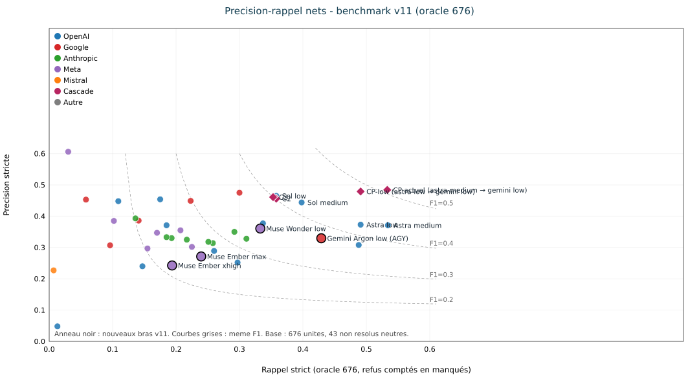
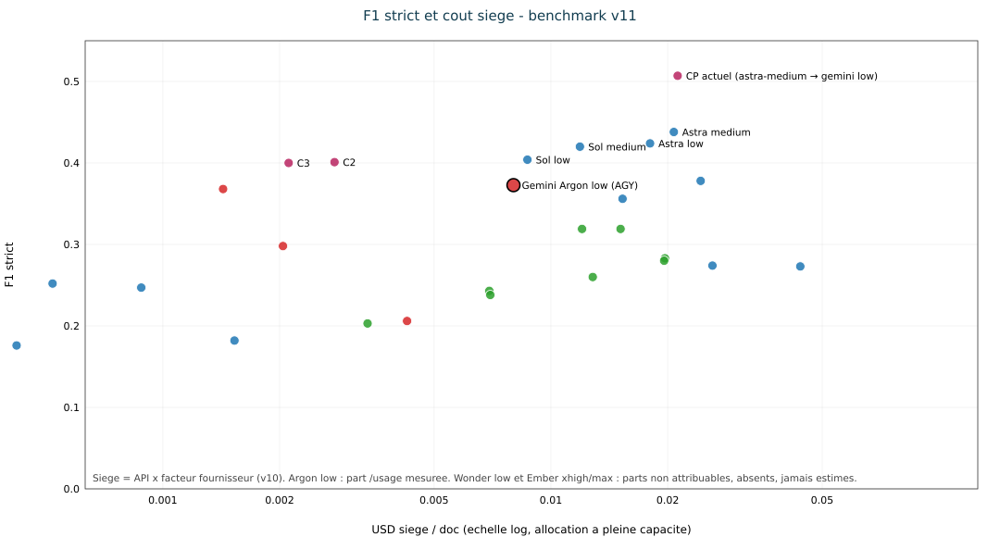
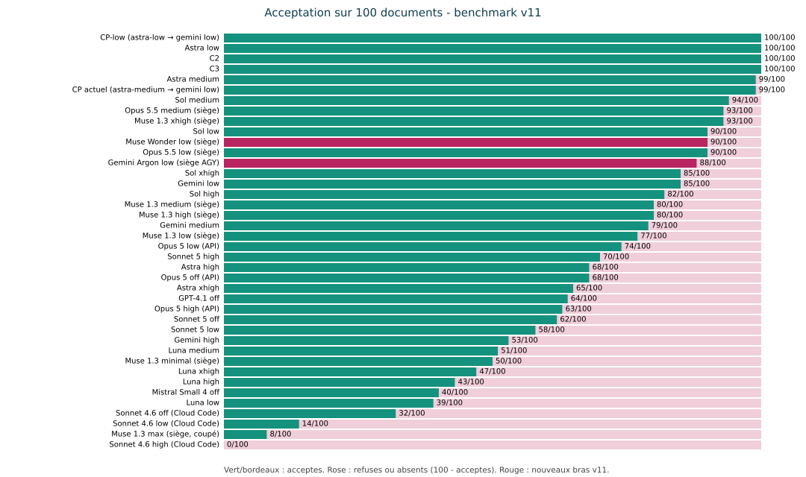
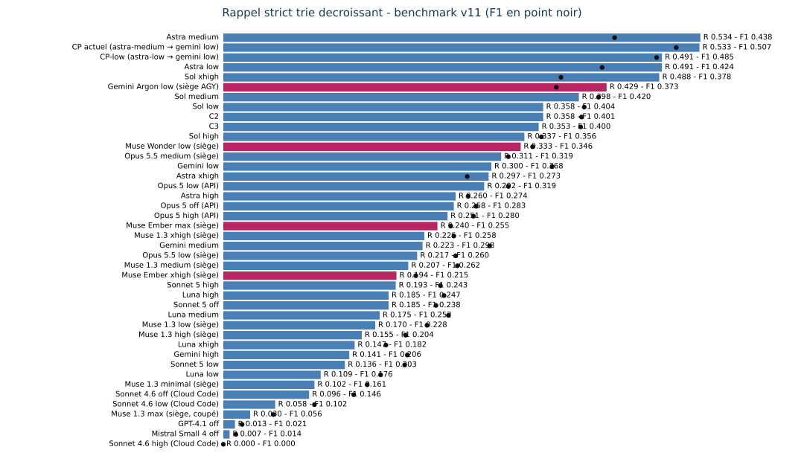

Benchmark v11 · Rapport complet · 9 novembre 2026<br>
Rédaction : lane benchmark v11 (conductor i-cond) ; base v10 (v101b, oracle 674) et v11alpha (oracle 676, #725).
Ce dossier v11 (sans « alpha ») intègre les lignes v11alpha, le bras Muse Wonder low complet et le nouveau bras Gemini Argon low, selon strictement la même méthode que v11alpha : mêmes prompts gelés (revérifiés count=100, fail=0), même validateur v9 gelé + provenance, même scoreur oracle 676 (43 non résolus neutres). Seule différence de protocole, déclarée : concurrence 10 pour les deux nouveaux bras (amendement owner). Aucune valeur publiée en v10 ou v11alpha n'est altérée ; les nouvelles lignes s'ajoutent.
- Muse Wonder low (muse-wonder-1.0, siège Muse) : 90/100 acceptés, P 0.361, R 0.333, F1 strict 0.346 — rang 12 au tri par rappel.
- Gemini Argon low (gemini-4-argon-low, siège AGY / Gemini Ultra) : 88/100 acceptés, P 0.330, R 0.429, F1 strict 0.373 — rang 6 au tri par rappel.
- Le combo CP actuel reste en tête en F1 (0,507) ; aucun modèle seul ne l'égale. Le tri du tableau global v11 est par rappel décroissant (consigne du dossier), le F1 reste affiché.
- Coûts : équivalents API calculés depuis les jetons réels et des tarifs publics sourcés et datés (section 6). Coûts siège des deux nouveaux bras : missing source (compteurs lus quand ils existent, dérivation impossible sans attribution isolable — relevés complets en section 6). Rien n'est estimé à la place.
- Corpus : 100 documents du manifeste v101b (sha256 PDF vérifiés), prompts gelés sha256 identiques au v10, validation profil v9 + provenance, notation oracle v3 stricte sur oracle 676 (#725, 43 non résolus neutres). Règle « Fair Benchmarking — No Cheating » (rules/MASTER.md) : métriques gelées avant notation, appliquées à l'identique, aucune fabrication, traçabilité complète.
- Gemini Argon low — modèle exact gemini-4-argon-low (catalogue AGY relevé le 2026-11-09 : gemini-4-argon-{low,medium,high}, effort encodé dans l'identifiant). Transport siège headless AGY, uniforme sur les 100 documents : agy --model gemini-4-argon-low --input-format stream-json --output-format stream-json, ligne d'entrée {"event":"user","message":{"content":<octets du prompt gelé>}}, fichier brut = result.response de l'événement final. Le canal stdin remplace le canal argv (--print=<prompt>) qui heurte la limite Linux de 128 Kio par argument (spawn E2BIG) sur les plus gros prompts gelés : un premier passage argv (53/100 documents, 3 erreurs d'outillage, arrêt E2BIG avant toute validation ni notation) est archivé sous arms/gemini-argon-low/pass1-print-raw/ et n'est pas noté. La CLI AGY ajoute son propre contexte d'agent autour du prompt gelé : l'écart avec un appel API brut n'est pas mesuré (même réserve que les bras Opus 5.5 claude -p de v11alpha).
- Muse Wonder low — muse-wonder-1.0, muse exec --provider meta --reasoning-effort low --prompt-file <prompt gelé>, siège Muse, déjà exécuté (100/100, 0 événement quota). Colonnes complétées ici par capture d'usage --json sur l'échantillon burn (jetons réels fournisseur).
- Sièges uniquement, aucune clé API. Reprise sur quota de siège : attente 300 s, maximum 12 tentatives, jamais de bascule clé, le quota n'est jamais compté comme un refus. Argon : 0 événement(s) quota sur le passage noté ; Wonder : 0.
- Concurrence 10 (au lieu de 1 en v11alpha) : les latences p50/p90 des deux nouveaux bras sont mesurées sous concurrence 10 et ne sont pas comparables aux colonnes de latence v10/v11alpha. P, R, F1 et acceptés ne dépendent pas de la concurrence.
- Incidents d'infrastructure Argon (jamais comptés comme refus ni quota) : erreurs de construction de boîte à outils AGY (mcp_h2a_render_BarChart, $ref distant résolu en URL fichier), authentification expirée et flux interrompus. Cause établie par reproduction : en séquentiel, aucune erreur d'outillage ; en rafale de 10 démarrages simultanés, les constructions de boîte à outils entrent en collision. Les échecs ont été repris par relances du runner (seules les sorties non vides sont sautées), les derniers documents en séquentiel avec la même commande et les mêmes octets. Les flux des réponses réussies ne contiennent aucun appel d'outil (étapes user_input puis agent_response) : la boîte à outils n'intervient pas dans l'extraction.
40 lignes : 38 lignes v11alpha recopiées sans rescoring, plus Muse Wonder low et Gemini Argon low. ᵃ = valeur du rapport v10 (oracle 674) telle que publiée en v11alpha. USD hors taxes ; missing source = jamais estimé.
| # (rappel) | Modèle · effort | Acceptés /100 | P | R | F1 strict | Équiv. API USD/doc | USD siège/doc |
|---|---|---|---|---|---|---|---|
| 1 | Astra medium | 99 | 0.371 | 0.534 | 0.438 | 0.4689 | 0.0207 |
| 2 | CP actuel (astra-medium → gemini low) | 99 | 0.484 | 0.533 | 0.507 | 0.4813 | 0.0212 |
| 3 | CP-low (astra-low → gemini low) | 100 | 0.479 | 0.491 | 0.485 | missing source | missing source |
| 4 | Astra low | 100 | 0.373 | 0.491 | 0.424 | 0.4072 | 0.0180 |
| 5 | Sol xhigh | 85 | 0.308 | 0.488 | 0.378 | 0.5498 | 0.0243 |
| 6 | Gemini Argon low (siège AGY) | 88 | 0.330 | 0.429 | 0.373 | 0.2074 | missing source |
| 7 | Sol medium ᵃ | 94 | 0.444 | 0.398 | 0.420 | 0.2686 | 0.0119 |
| 8 | Sol low ᵃ | 90 | 0.465 | 0.358 | 0.404 | 0.1967 | 0.00870 |
| 9 | C2 ᵃ | 100 | 0.456 | 0.358 | 0.401 | 0.0689 | 0.00277 |
| 10 | C3 ᵃ | 100 | 0.461 | 0.353 | 0.400 | 0.0543 | 0.00211 |
| 11 | Sol high | 82 | 0.377 | 0.337 | 0.356 | 0.3460 | 0.0153 |
| 12 | Muse Wonder low (siège) | 90 | 0.361 | 0.333 | 0.346 | 0.2731 | missing source |
| 13 | Opus 5.5 medium (siège) | 93 | 0.328 | 0.311 | 0.319 | 0.4999 | 0.0151 |
| 14 | Gemini low | 85 | 0.475 | 0.300 | 0.368 | 0.0376 | 0.00143 |
| 15 | Astra xhigh | 65 | 0.252 | 0.297 | 0.273 | 0.9929 | 0.0439 |
| 16 | Opus 5 low (API) ᵃ | 74 | 0.350 | 0.292 | 0.319 | 0.3976 | 0.0120 |
| 17 | Astra high | 68 | 0.289 | 0.260 | 0.274 | 0.5896 | 0.0261 |
| 18 | Opus 5 off (API) ᵃ | 68 | 0.314 | 0.258 | 0.283 | 0.6507 | 0.0197 |
| 19 | Opus 5 high (API) ᵃ | 63 | 0.318 | 0.251 | 0.280 | 0.6472 | 0.0196 |
| 20 | Muse 1.3 xhigh (siège) | 93 | 0.302 | 0.225 | 0.258 | 0.0343 | missing source |
| 21 | Gemini medium | 79 | 0.449 | 0.223 | 0.298 | 0.0539 | 0.00204 |
| 22 | Opus 5.5 low (siège) | 90 | 0.325 | 0.217 | 0.260 | 0.4239 | 0.0128 |
| 23 | Muse 1.3 medium (siège) | 80 | 0.355 | 0.207 | 0.262 | 0.0305 | missing source |
| 24 | Sonnet 5 high ᵃ | 70 | 0.330 | 0.193 | 0.243 | 0.2295 | 0.00694 |
| 25 | Luna high | 43 | 0.371 | 0.185 | 0.247 | 0.0199 | 0.00088 |
| 26 | Sonnet 5 off ᵃ | 62 | 0.333 | 0.185 | 0.238 | 0.2307 | 0.00698 |
| 27 | Luna medium | 51 | 0.454 | 0.175 | 0.252 | 0.0117 | 0.00052 |
| 28 | Muse 1.3 low (siège) | 77 | 0.347 | 0.170 | 0.228 | 0.0284 | missing source |
| 29 | Muse 1.3 high (siège) | 80 | 0.297 | 0.155 | 0.204 | 0.0310 | missing source |
| 30 | Luna xhigh ᵃ | 47 | 0.240 | 0.147 | 0.182 | 0.0346 | 0.00153 |
| 31 | Gemini high | 53 | 0.386 | 0.141 | 0.206 | 0.1123 | 0.00426 |
| 32 | Sonnet 5 low ᵃ | 58 | 0.393 | 0.136 | 0.203 | 0.1114 | 0.00337 |
| 33 | Luna low | 39 | 0.448 | 0.109 | 0.176 | 0.00949 | 0.00042 |
| 34 | Muse 1.3 minimal (siège) | 50 | 0.385 | 0.102 | 0.161 | 0.0279 | missing source |
| 35 | Sonnet 4.6 off (Cloud Code) | 32 | 0.307 | 0.096 | 0.146 | 0.1750 | missing source |
| 36 | Sonnet 4.6 low (Cloud Code) | 14 | 0.453 | 0.058 | 0.102 | 0.1478 | missing source |
| 37 | Muse 1.3 max (siège, coupé) | 8 | 0.606 | 0.030 | 0.056 | missing source | missing source |
| 38 | GPT-4.1 off | 64 | 0.048 | 0.013 | 0.021 | 0.0542 | missing source |
| 39 | Mistral Small 4 off | 40 | 0.227 | 0.007 | 0.014 | 0.00500 | missing source |
| 40 | Sonnet 4.6 high (Cloud Code) | 0 | N-A | 0.000 | 0.000 | missing source | missing source |
Lecture : le tri par rappel met Astra medium (R 0,534) et CP (R 0,533) en tête ; CP reste premier en F1 (0,507) et en précision (0,484). Gemini Argon low et Muse Wonder low se classent par leur rappel respectif (voir rangs ci-dessus). Les coûts siège historiques valent API × facteur fournisseur mesuré par burn en v10 (Codex 0,044235 ; Google 0,037931 ; Claude 0,030248) ; les nouveaux bras n'ont pas de facteur mesuré : missing source.
J = JSON invalide ; V = profil v9 refusé ; Pr = provenance ; T = transport / réponse vide. Pour les bras v11alpha, la colonne publiée était J · V · T (Pr non séparé : N-A ici, sans rescoring).
| Bras | Tentés | Acceptés | Échecs (J · V · Pr · T) | F1 net 4 doc | p50 s | p90 s | Sortie moy. (jetons) | Équiv. API USD/doc | USD siège/doc |
|---|---|---|---|---|---|---|---|---|---|
| Opus 5.5 low | 100 | 90 | 0 · 6 · N-A · 4 | 0.143 | 49 | 97 | 6188 | 0.4239 | 0.0128 |
| Opus 5.5 medium | 100 | 93 | 0 · 3 · N-A · 4 | 0.388 | 75 | 150 | 10269 | 0.4999 | 0.0151 |
| Muse 1.3 minimal | 100 | 50 | 18 · 32 · N-A · 0 | 0.167 | 27 | 45 | N-A | 0.0279 | missing source |
| Muse 1.3 low | 100 | 77 | 3 · 20 · N-A · 0 | 0.386 | 35 | 61 | N-A | 0.0284 | missing source |
| Muse 1.3 medium | 100 | 80 | 2 · 18 · N-A · 0 | 0.515 | 63 | 102 | N-A | 0.0305 | missing source |
| Muse 1.3 high | 100 | 80 | 10 · 10 · N-A · 0 | 0.415 | 76 | 147 | N-A | 0.0310 | missing source |
| Muse 1.3 xhigh | 100 | 93 | 3 · 4 · N-A · 0 | 0.241 | 107 | 157 | N-A | 0.0343 | missing source |
| Muse Wonder low | 100 | 90 | 1 · 9 · 0 · 0 | 0.306 | 48.3 ¹ | 108.1 ¹ | 5085 réelle (burn) | 0.2731 ² | missing source |
| Gemini Argon low | 100 | 88 | 0 · 12 · 0 · 0 | 0.338 | 134.6 ¹ | 266.1 ¹ | 15528 réelle (bras) | 0.2074 ³ | missing source |
¹ Concurrence 10 : non comparable aux latences v11alpha (concurrence 1). ² Tarif Meta Model API muse-wonder-1.0 4,00 / 0,20 (cache) / 20,00 USD par million de jetons (entrée / cache / sortie), prix public relevé le 2026-11-03 (voir sources §6) ; formule [(I−C)×4 + C×0,20 + O×20]/10⁶ sur jetons réels du burn (n=10, seau S — voir limites §6). Avec raisonnement facturé en sortie : 0.2910. ³ Tarif Gemini Developer API Gemini 4 Argon 2,00 / 0,10 (cache) / 10,00 USD par million (en vigueur au 2026-11-09, avant le passage à 4/20 le 2026-12-01) ; formule [(I−C)×2 + C×0,10 + (O+T)×10]/10⁶ sur jetons réels du bras complet (n=100) ; burn (n=10) : 0.1351.
Détail Wonder : entrée réelle (burn n=10) 56791 / sortie réelle 5085 (raisonnement 893, cache 14665) ; bras complet : sortie estimée octets/4 4250 (unverified). Détail Argon : entrée réelle (bras, n=100) 26053 / sortie réelle 15528 (réflexion 0, cache 0). Scores secondaires (même scoreur) — Wonder : F1 broad 0.340, stage-tolerant 0.409, soft 0.355 (TP 225, FP 399, FN 451). Argon : F1 broad 0.365, stage-tolerant 0.447, soft 0.393 (TP 290, FP 590, FN 386).
Les p50/p90 des bras v10/v11alpha (concurrence 1) restent ceux des rapports publiés (tableaux v10 §5 et v11alpha §3, non recopiés ici pour éviter toute altération). Nouveaux bras, concurrence 10 — non comparables : Muse Wonder low p50 48.3 s, p90 108.1 s ; Gemini Argon low p50 134.6 s, p90 266.1 s (temps mur des seules tentatives réussies distinctes ; Argon mélange le passage principal en concurrence 10 et des reprises séquentielles d'erreurs d'infrastructure, donc doublement non comparable ; événements quota Argon : 0). Sous concurrence 10, ces durées incluent l'attente d'ordonnancement du siège partagé.
Un accès API facture les jetons ; un siège est un abonnement à quota. Le burn mesure la consommation de quota sur un échantillon fixe (10 documents gelés, les 10 premiers du manifeste), avec relevés avant/après quand le fournisseur expose un compteur. Méthode v10 : C_siège = C_API × f, f = S / É_mois extrapolé de la fraction de quota consommée. Sans bascule de compteur attribuable, aucun facteur n'est dérivé : missing source.
| Objet | Tarif | Source | Relevé |
|---|---|---|---|
Meta Model API muse-wonder-1.0 | 4,00 entrée / 0,20 cache / 20,00 sortie USD par M jetons | Page tarifs Meta Model API, via relevés publics concordants (superagnt.com/muse/pricing ; sentisight.ai) | 2026-11-03 |
Gemini Developer API Gemini 4 Argon | 2,00 entrée / 0,10 cache / 10,00 sortie USD par M jetons (4/20 à partir du 2026-12-01) | Page tarifs Gemini Developer API, via relevés publics concordants (licenseware.io, source : Gemini Developer API pricing au 2026-11-03) | 2026-11-03 (en vigueur au 2026-11-09) |
| Google AI Ultra (siège) | 99,99 USD/mois (5x) ; 199,99 USD/mois (20x), US | gemini.google/subscriptions, via relevés publics concordants (lilachbullock.com ; whizi.io) | octobre 2026 |
| Muse Code (siège) | Power 50 USD/mois ; Maximum 200 USD/mois (Wonder Full inclus) | Meta Help Center / tarifs Muse, via relevés publics concordants (superagnt.com/muse/pricing) | 2026-11-03 |
Le palier exact détenu par l'owner (Ultra 5x ou 20x « doublé », Muse Power ou Maximum) n'est pas établi par une source lisible dans cette lane : il n'entre dans aucun calcul publié ici.
Échantillon : 10 premiers documents du manifeste, muse exec --provider meta --model muse-wonder-1.0 --reasoning-effort low --json séquentiel (run-burn-wonder-usage10). Un premier essai Saint-Polycarpe a échoué sur timeout du runtime Muse (exit 1, usage nul) puis a réussi à la reprise ; il n'est pas compté comme un refus. Jetons réels moyens : entrée 56791/doc, sortie 5085/doc, raisonnement 893/doc, cache 14665/doc. Ces entrées incluent le contexte propre de la CLI Muse (contexte d'agent autour du prompt gelé) : l'équivalent API surestime donc le coût du seul prompt gelé en API brute — même réserve que les bras claude -p de v11alpha.
Relevés d'allocation (run.usage.allowance, source stream) : hebdomadaire 13 % au 2026-11-09T16:18:31.212Z → 14 % au 2026-11-09T17:06:37.392Z (réinitialisation 2026-11-16T00:00:00.000Z). La fenêtre courte a basculé entre-temps (réinitialisation intermédiaire) et n'est pas comparable. Le compteur hebdomadaire est partagé avec toutes les sessions du compte, y compris la session conductrice : la bascule observée (+1 point entier, granularité ±1 point) n'est pas attribuable au seul échantillon. USD siège/doc Muse Wonder low : missing source (compteur lu, dérivation non attribuable, palier d'abonnement non établi).
Échantillon : mêmes 10 documents, agy --model gemini-4-argon-low --output-format json séquentiel (run-burn-argon). Jetons réels moyens du burn : entrée 17616/doc, sortie 9983/doc, réflexion 0/doc (horodatages par document dans burn-argon-usage10/*.usage.json). L'enveloppe AGY expose usage (jetons) mais aucun compteur d'allocation de siège (vérifié sur --help, models et l'enveloppe JSON le 2026-11-09) : aucun relevé avant/après n'existe. USD siège/doc Gemini Argon low : missing source (prix Ultra sourcés ci-dessus, aucune fraction de quota mesurée). Équivalent API du burn : 0.1351 ; du bras complet (n=100, jetons réels stream-json) : 0.2074.
| Bras | Jetons entrée/doc | Jetons sortie/doc | Équiv. API USD/doc | USD siège/doc |
|---|---|---|---|---|
| Muse Wonder low | 56791 (burn n=10, CLI incluse) | 5085 (+ raisonnement 893) | 0.2731 | missing source |
| Gemini Argon low | 26053 (bras n=100) | 15528 (+ réflexion 0) | 0.2074 | missing source |




Graphiques régénérés en Node dans le style v101b (fond blanc, grille claire, DejaVu Sans) par tools/bench-v11/build-v11-report.mjs — les SVG v10 venaient de Matplotlib, non réutilisable sous la règle zéro Python du dépôt. Aucun point nouveau bras n'est placé sur le graphique F1-coût siège, faute de facteur mesuré.
- Aucun modèle seul n'égale le combo CP (F1 0,507). Au tri par rappel, Astra medium et CP dominent ; les deux nouveaux bras se placent dans le peloton des bras siège (F1 Wonder 0.346, Argon 0.373).
- Muse Wonder low dépasse tous les bras Muse 1.3 de v11alpha (meilleur : medium 0,262) ; Gemini Argon low est le premier bras Gemini 4 mesuré sur ce banc (à comparer à Gemini 3.8 low 0,368, medium 0,298, high 0,206 — générations différentes, même oracle).
- Les refus des nouveaux bras sont dominés par le profil v9 (V), comme en v11alpha aux efforts bas ; le détail J · V · Pr · T est en section 4.
- Côté coûts, les équivalents API des nouveaux bras (0.2731 Wonder sur burn, 0.2074 Argon sur bras) restent très inférieurs à CP (0,48134), pour une qualité moindre : le compromis publié en v10 n'est pas renversé par ces deux lignes.
- Échantillon burn Wonder : 10 documents du seau S (petits) ; les moyennes de jetons ne se extrapolent pas sans réserve aux seaux M/L. Les entrées Muse incluent le contexte CLI (voir §6).
- Compteurs de siège : Muse lu mais non attribuable (sessions partagées, granularité 1 point) ; AGY sans compteur exposé. Les deux USD siège/doc restent missing source ; les prix d'abonnement sourcés ne suffisent pas sans fraction de quota mesurée.
- Passage Argon argv archivé non noté (voir §2) ; erreurs d'outillage AGY (construction de boîte à outils MCP, retryable:false) reprises par relance du runner (seules les sorties non vides sont sautées) — jamais comptées comme refus modèle ni quota.
- Harnais versionné : tools/bench-v11/ (scripts, manifeste + SHA256SUMS, oracle 676, profil gelé ; PDF du corpus exclus). Preuves d'exécution (clone, non versionnées) : tmp/bench-wonder/full/arms/{muse-wonder-low,gemini-argon-low}/, tmp/bench-wonder/full/scores-{wonder,argon}.json, tmp/bench-wonder/full/burn-{wonder,argon}-usage10/, tmp/bench-wonder/full/prompts/verify.json.
- Rapports v10 (benchmark-v101b-2026-09-17.md) et v11alpha (benchmark-v11alpha-2026-09-29.md + complément Wonder) intacts ; ce dossier les prolonge sans les modifier.
- Meta Model API, tarifs muse-wonder-1.0 (4,00 / 0,20 / 20,00 USD par M) et Muse Power 50 / Maximum 200 USD/mois — relevés concordants du 2026-11-03 (superagnt.com/muse/pricing ; sentisight.ai, « Muse Wonder Token Pricing » ; blog.laozhang.ai). Consultés pour ce dossier le 2026-11-09.
- Gemini Developer API, tarifs Gemini 4 Argon (2,00 / 0,10 / 10,00 USD par M jusqu'au 2026-11-30, puis 4/20) — relevés concordants du 2026-11-03 (licenseware.io, « Gemini API Cost per Million Tokens (November 2026) », source : Gemini Developer API pricing). Consultés le 2026-11-09.
- Google AI Ultra 99,99 (5x) / 199,99 (20x) USD/mois US — gemini.google/subscriptions via relevés concordants d'octobre 2026 (lilachbullock.com ; whizi.io, lecture du 2026-10-11). Page officielle réouverte le 2026-11-09 (édition Canada, Argon confirmé sur Pro et Ultra).
- Catalogue AGY du siège : agy models le 2026-11-09 (gemini-4-argon-low = « Gemini 4 Argon (Low) ») ; CLI agy headless --input-format stream-json.